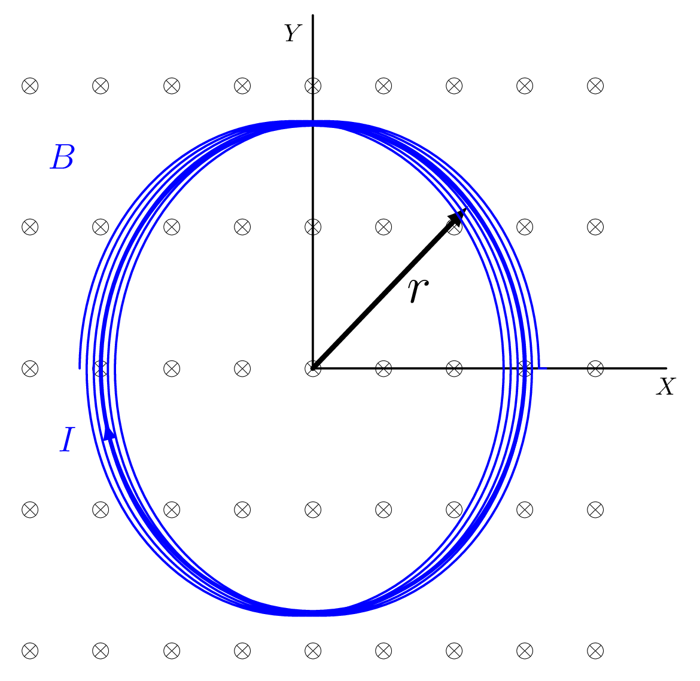

Example 3.8.1.
A coil of wire of radius 5 cm and 100 turns is centered at the origin and lies in the x/y plane. A uniform magnetic field is in the -z direction and is increasing at the rate of 0.2 T/s. If the resistance of the coil is \(50 \Omega,\) find

- the emf induced in the coil,
- the current in the coil,
- the direction of the current in the coil,
- the direction of the magnetic field resulting from the current in the coil,
- the power required to keep the original magnetic field increasing at 0.2 T/s.
Solution.
Given: \(r=0.05\,m, \quad N=100, \quad B=(0.2\,T/s)t,\) \(R = 50\,\Omega\)
- \begin{equation*} \Phi_{B} = \int \vec{B}\cdot \vec{\,dA} = BA \end{equation*}\begin{equation*} A=\pi r^{2} = 0.00785 \,m^{2} \end{equation*}\begin{equation*} \varepsilon = -N\frac{\,d\Phi_{B}}{\,dt} \end{equation*}\begin{equation*} \Phi_{B} = (0.00157 \,W_{b}/s)t \end{equation*}
- \begin{equation*} \varepsilon = IR; \quad I = -3.14 \,mA \end{equation*}
- Counter Clockwise
- +z direction (opposite increasing B).
- \begin{equation*} P = I\varepsilon =I^{2}R = 0.493 \,mW. \end{equation*}